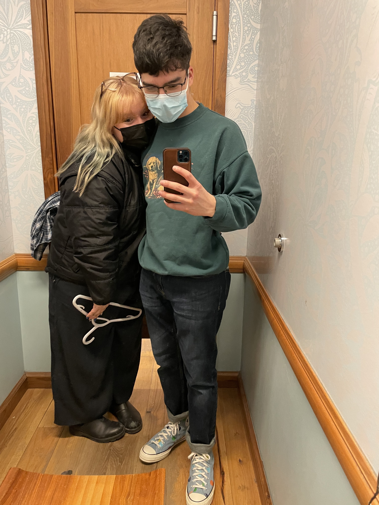

18/09/2022: juliette's birthday message
i don't even know where to start this.
i wish you a very happy birthday. c'est fou comment tu peux vivre tellement avec quelqu'un en si peu de temps. i feel like i've know you for ages, and i can't wait to continue spending more of my life with you. wihtout a doubt, you are the best person i know.
malgré que tu es la girlfriend la plus exceptionnelle, tu es avant tout la meilleure des amies. Tu trouves toujours les meilleures blagues aux meilleurs moments. tu comprends toujours mes références même les plus obscures et toi aussi tu fais les meilleures références. we just click together 24/7. we complete each other's sentences and we always know EXACTLY what the other person wants to say, even when we only say half a sentence. it's like the best connection ever. also you have showed me so much and i've learned so much on all levels. you made me discover men i trust, you're always giving me lessons on subjects i don't know about but want to learn, everything you say is always so interesting and i just can't help but be just as fasciné as you are.


mais on ne peut certainement pas oublier le fait que t'es la girlfriend la plus extraordinaire qui soit. à chaque jour je suis reconnaissant d'avoir quelqu'un qui m'aime, qui me donne de la force quand ca va pas bien et qui me fait rire quand je suis en mode tristounet. quelqu'un qui me donne des gros calins just because, qui me fait des gratouilles et des massages sans même que j'aille à demander, bref : toi. je sais que je fais moi aussi beaucoup de gestes romantiques et gentils, mais je pense que je ne te dis pas assez souvent comment toi aussi tu es incroyable. je suis tellement admiratif de tout ce que tu fais pour moi et de la manière dont on s'entraide tous les deux et on passe du temps ensemble. si dès aujourd'hui on nous dit qu'on est en mode grand-papa i can't wait but imagine how it will be in the future.
i swear to god y'a pas un meilleur feeling au monde que de voir ton visage rempli de joie quand tu me vois où quand je te donne un cadeau ou je te fais une petite attention. i love your smile. makes me melt everytime.
aussi genre wtf t'es tellement intelligente. je vais pas trop booster ton ego mais pour vrai j'adore parler de temas avec toi c'est toujours full intéressant et ouais. aussi j'admire à quel point tu es la plus strong et tu passes toujours à travers de tout. i'm also so happy that you trust me enough to tell me stuff, i enjoy just as much making you feel better and always being the positive dude, even if sometimes you find me annoying. it's the least i can do considering everything you do for me. :)
c'est assez drôle car quand j'étais au secondaire pis je parlais avec victor il était comme "ouais santi don't worry one day you will find someone who gets you and will pay attention to all your little details and attentions and gestures. you are so much worth it, it's not that nobody wants you, it's just nobody has their eyes open yet" i didn't believe him. not for a second. i thought i was just being nice for nothing and that my ways of doing were not it. hahahahahaha yooooooooo... thank you for opening your eyes. i think that they were open from the moment you saw me enter that analyse class but nonetheless, thank you for chosing me <3
but yeah i really don't know where i got all of this. i swear i've never had experience before. it's all coming from my brain. i guess i'm either good as fuck or you really are perfect for me. probably a mix of both;)
anyways, thank you juliette. happy birthday too. you are an amazing person, and you should be proud of who you are. i certainly am grateful to have you. i can't wait to see where we're headed. <3
i love you.
-santi